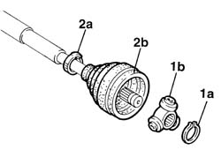
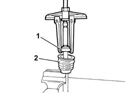
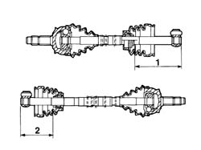
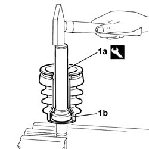
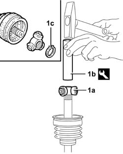

2710A52 differential end sliding joint (one) l/h or r/h - r + r with drive shaft removed - includes boot replacement
- Path
- Procedures > 27 AXLE > 2710 FRONT AXLE > 2710A drive shafts and joints > 2710A52 differential end sliding joint (one) l/h or r/h - r + r with drive shaft removed - includes boot replacement
- Kind
- repair procedure (removal / refitting; the operation number is the code)
- Applies to
- all engines; all production periods
- Interactive page
- https://sloeber94.github.io/elrnDB-fDbl/en/#/2584614
Applies to: all engines; all production periods
 Removing
Removing
 Refitting
RefittingPlace the drive shaft in a vice.
1. Remove the circlip (1a) and withdraw the tripod joint from the drive shaft (1b).
2. Remove retaining clip (2a) and move back protective gaiter (2b).

Applies to: all engines; all production periods
1. Remove the fluid-tight bearing from the drive shaft using a universal puller.
2. Remove the protective gaiter from the drive shaft.

Applies to: all engines; all production periods
Refitting
RemovingReplace the gaiter and the fluid-tight bearing.
Position the gaiter - fluid-tight bearing assembly on the drive shaft.
Applies to: engines: 1.2 8v; all production periods
1. If the right fluid-tight gaiter - bearing assembly has been serviced, it must be refitted in accordance with the specified dimensions.
Dimension for fitting right drive shaft fluid-tight gaiter-bearing assembly.
 | Measurement | Value | |
|---|---|---|---|
1 | Fitting of right driveshaft roller bearing (mm) | 103.3 |
Dimension for fitting right drive shaft ball bearing - gaiter assembly.
| Measurement | Value | |
|---|---|---|---|
1 | Fitting of right driveshaft ball bearing (mm) | 104.4 |
2. If the left fluid-tight gaiter- bearing assembly has been removed, it must be refitted in accordance with the specified dimensions.
Dimension for fitting left drive shaft fluid-tight gaiter-bearing assembly.
| Measurement | Value | |
|---|---|---|---|
1 | Fitting of left driveshaft roller bearing (mm) | 143.3 |
Dimension for fitting left drive shaft ball bearing - gaiter assembly.
| Measurement | Value | |
|---|---|---|---|
1 | Fitting of left driveshaft ball bearing (mm) | 144.4 |

Applies to: engines: 1.9 DIESEL; all production periods
1. If the right fluid-tight bearing - gaiter assembly has been removed, it must be refitted in accordance with the specified dimensions.
Dimension for fitting right drive shaft fluid-tight roller bearing - gaiter assembly.
| Measurement | Value | |
|---|---|---|---|
1 | Fitting of right driveshaft roller bearing (mm) | 117.8 |
Dimension for fitting right drive shaft ball bearing - gaiter assembly.
| Measurement | Value | |
|---|---|---|---|
1 | Fitting of right driveshaft ball bearing (mm) | 118.9 |
2. If the left fluid-tight bearing - gaiter assembly has been removed, it must be refitted in accordance with the specified dimensions.
Dimension for fitting left drive shaft fluid-tight roller bearing - gaiter assembly.
| Measurement | Value | |
|---|---|---|---|
1 | Fitting of left driveshaft roller bearing (mm) | 143.3 |
Dimension for fitting left drive shaft ball bearing - gaiter assembly.
| Measurement | Value | |
|---|---|---|---|
1 | Fitting of left driveshaft ball bearing (mm) | 144.4 |
Applies to: engines: 1.9 DIESEL; all production periods
1. Using the tool (1a), fit the fluid-tight bearing - gaiter assembly (1b) on the drive shaft in accordance with the above dimensions.
 | Name | Country |
|---|---|---|
1a | Fitting tool | 1.870.465.000 |

Applies to: engines: 1.9 DIESEL; all production periods
Check that the drive shaft is not deformed or out of true in the area where the joint fits, and that the area in contact with the seal is not worn.
1. Fit the tripod joint (1a) on the drive shaft and use drift (1b) to fit it into iits seat and secure with clip (1c).
| Name | Country |
|---|---|---|
1b | Drift | 1.875.088.000 |

Applies to: engines: 1.9 DIESEL; all production periods
Fill the protective gaiter and bearing with grease.
 | Type | Component | Name | Qty. |
|---|---|---|---|---|
- | Grease | DRIVESHAFT CONSTANT VELOCITY JOINTS | TUTELA MRM 2 | - |